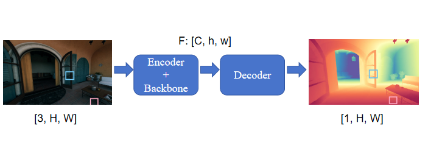
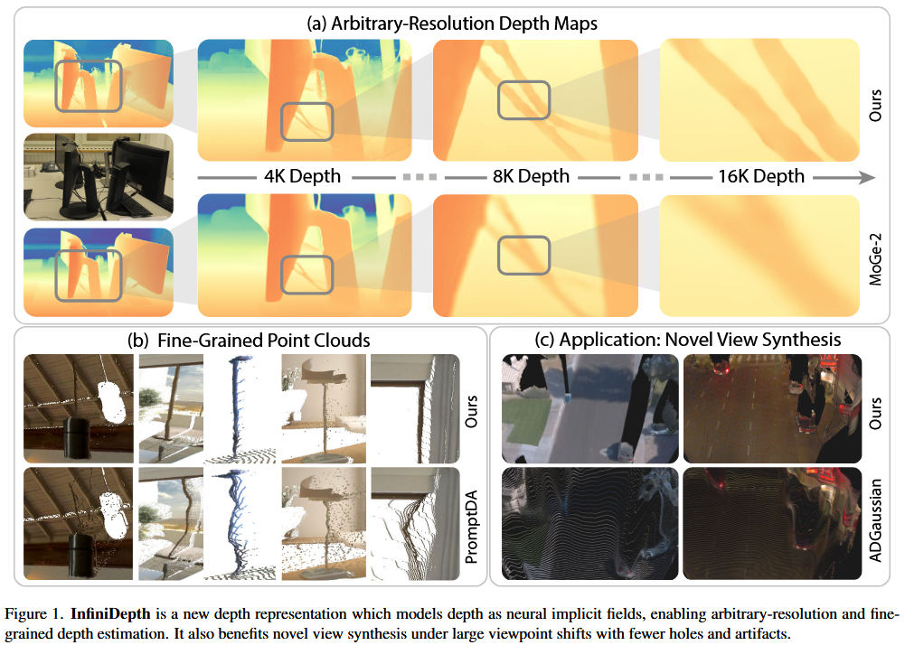
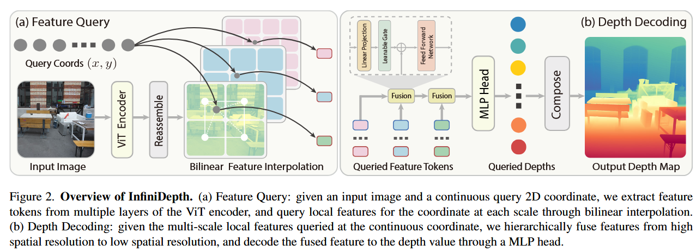
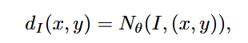
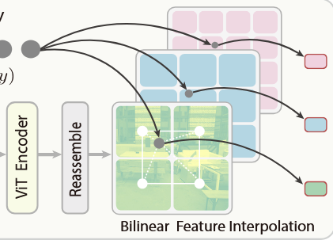
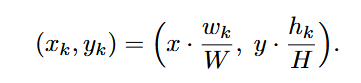
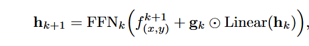
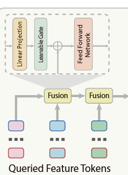
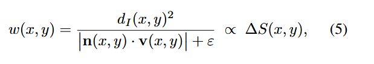
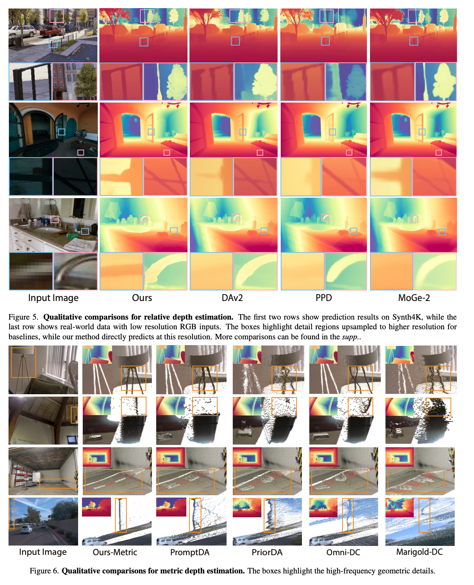

Research / spatial-reasoning
InfiniDepth:实现任意分辨率的深度估计
InfiniDepth(CVPR2026)论文分享
InfiniDepth: 实现任意分辨率的深度估计
发表会议/期刊：CVPR2026
论文链接：https://arxiv.org/abs/2601.03252
项目链接：https://zju3dv.github.io/InfiniDepth/
简介
这篇论文要做的工作是由 RGB 图像生成 Depth 深度图像，所属领域是 <font style="color:rgb(0, 0, 0);">Monocular depth estimation（MDE）。</font>
<font style="color:rgb(0, 0, 0);">传统 MDE 方法的范式是，首先输入 shape 为 [3, H, W] 的 RGB 图像，经过 Encoder(如 ViT 等) 得到图像 patch，然后经过设计的算法，得到一个好的 latent feature，最后基于这个 latent feature，去 Decode 出一个 shape 为 [1, H, W] 的 Depth 图像。</font>

这种范式的方法普遍面临两个问题：
- 难以在保留精细细节的同时生成高分辨率图像
- 在有显著几何变化的区域无法估计准确

作者认为，这些问题的原因可以归咎于 RGB 图像的特征表示不够好，主要在于这些方法的特征表示将输入图像和要预测的深度图都视为离散的 2d grid。
Fundamentally, these limitations stem from the discrete grid-based depth representation, which constrains depth prediction at fixed grid locations, inherently limiting output resolution to the training image size.
模型实际做的，是以 RGB 图像为 condition，预测一个离散的 2d grid 上每一个点的深度值。针对这个问题，作者提出将 RGB feature 视为一个连续的深度场 d(x, y | Image)。具体方法将在后续 方法 部分介绍。
论文的 contribution 如下：
• We propose a new depth representation that models depth as neural implicit fields and demonstrate its capability for arbitrary-resolution and fine-grained depth estimation.
• We design a depth query strategy that produces uniformly distributed 3D points on object surfaces, improving novel view synthesis quality under large viewpoint shifts.
• We curate Synth4K, a high-quality 4K benchmark for evaluating depth estimation methods at high resolution and fine geometric details.
方法

infinidepth 的方法架构图如上图所示，接下来我们从 算法整体流程，如何得到 Image feature，feature query 是什么来介绍 infinidepth 的方法。
算法流程
infinidepth 要做的，是首先基于深度学习，根据输入的 RGB 图像，得到一个深度场 f(x, y)。这里实际上是首先输入 RGB 图像，根据一个 Encoder 算法得到整张图像的 Image Feature（f）。然后根据 Image Feature 和原始图像坐标 (x, y) 的关系，就能根据 f 知道 f(x, y)。
在知道 f(x, y) 后，将 (x, y) 坐标 embedding 为 query，与对应坐标的 f(x, y) 进行融合，最后经过一个 MLP 得到该坐标 (x, y) 处的深度值 d(x, y)。
也就是说，对比传统方法算法去基于一张 RGB 图像输出对应的固定分辨率的完整的 depth 图像，infinidepth 做的，是基于 RGB 图像和 对应坐标，输出对应坐标的深度值。

Image Feature
infinidepth 基于一个 ViT 得到多尺度的 f，因为 ViT 本身就有很多层，每一层的中间结果也作为一个尺度的 feature：

然后对于每一个坐标对应的 f，计算方式如下，其实就是做每一层可能有 patch embedding 的操作，图像变成更小的 patch 块，坐标需要对应地进行缩放。

同时，每个坐标的 f 与其邻居 f 进行融合，得到最终的每个尺度的 f 的表示。（这里感觉可以优化，因为直觉上不是那么自然）
For each scale k, we define the local grid neighborhood around (xk, yk) as as Nk(xk, yk), which is (i, j) i ∈ {⌊xk⌋, ⌊xk⌋ + 1}, j ∈ {⌊yk⌋, ⌊yk⌋ + 1} , and aggregate features from this neighborhood using bilinear interpolation, yielding a feature token f k (x,y) ∈ R1×Ck for the query coordinate (x, y) at scale k.
最后，将所有尺度的 f 进行融合，得到 f(x, y):

Feature query
在训练时，对比传统的范式，infinidepth输入的是 RGB Image 和一系列候选的需要预测的 (x, y)，这些坐标被 embedding 为 feature query。ground truth 不再是一张完整的 dpeth 图像，而是一张 depth 图像上各个候选坐标的深度值。

任意分辨率depth生成实现
在训练时，(x, y) 是一张完整图像上的部分坐标点。
在推理时，(x, y) 就是一整张图的所有坐标点。并且，(x, y) 可以任意任意分辨率。结合前面的 x_k, y _k 计算方式，即便 (x, y) 超过了原有图像的尺度，输入依然是有效的，这就让模型能够具备生成任意分辨率的深度图的潜力，当然我觉得要实际应用，训练应该是需要有一定额外设置的。
在 3D 重构上的作用
infinidepth 的这种 feature representation 的方式，也能够应用与 3d 重构上。传统方法在重构 3d 图像时，面临下面的问题：
- 生成的结果远处的点很稀疏，近处的点很密集，这是因为远处的点和近处的点在 2d grid 上都表现为平等的一个坐标点，但实际上二者应该区别对待。
- 在斜面上表示不准确。
首先，(x, y) 不仅只是整数，也可以是小数，如 (100,1, 100.2)，那么我们就可以控制每一个 pixel 需要的点有多少，比如远处我们可以取到 (100.1, 100.2, 100.3 ,,,,, 101) 10个 sub-pixel，在近处就只取5 个 sub-pixel，这就能够让近处和远处的点平衡，下面的公式是作者提出的如何确定近处远处以及斜面上应该设置多少 sub-pixel的公式：

此外，在计算 surface normal（sn） 时（公式中的 n(x,y)），传统方法是离散的，估算出的 sn 结果有一定偏差。而 infinidepth 是连续的，能够通过梯度计算算出更准确的 sn，这也是一大优势。
实验效果
